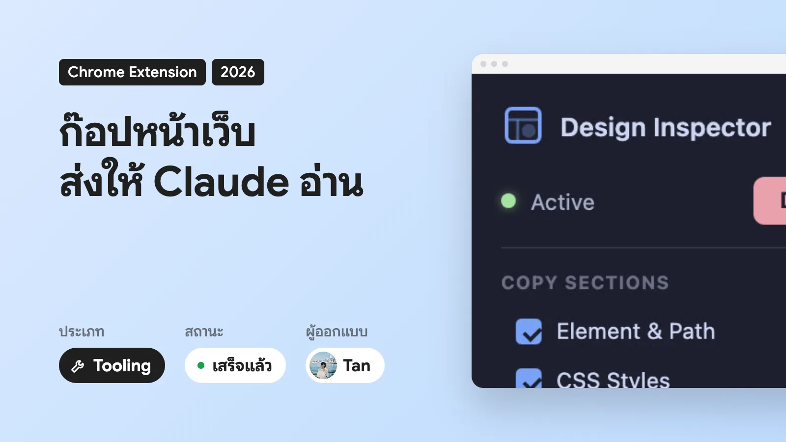
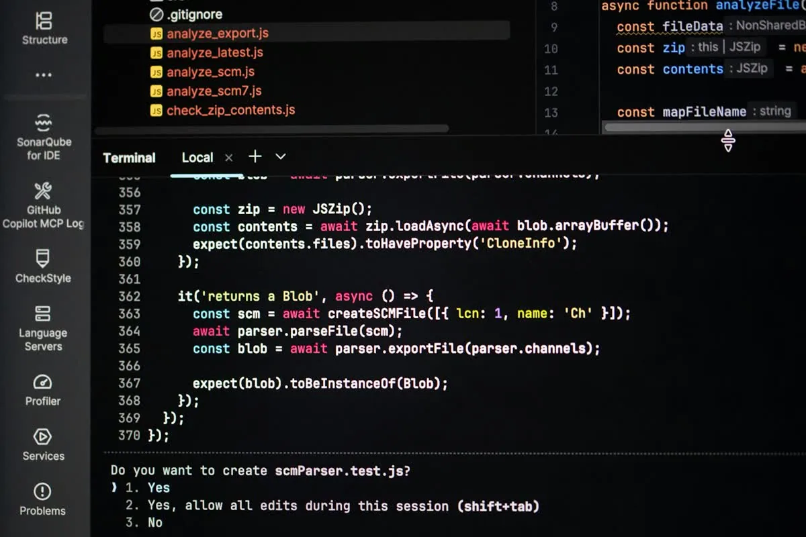
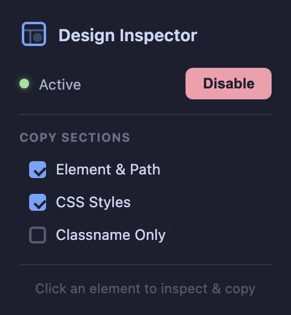
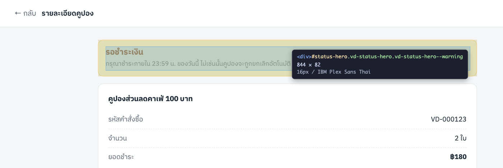
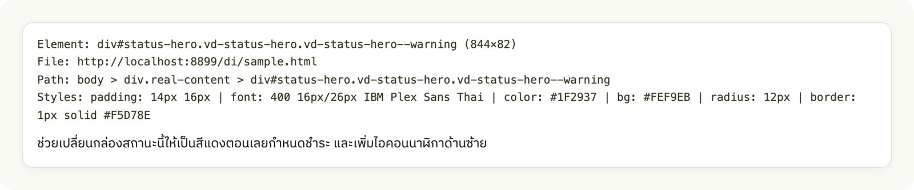
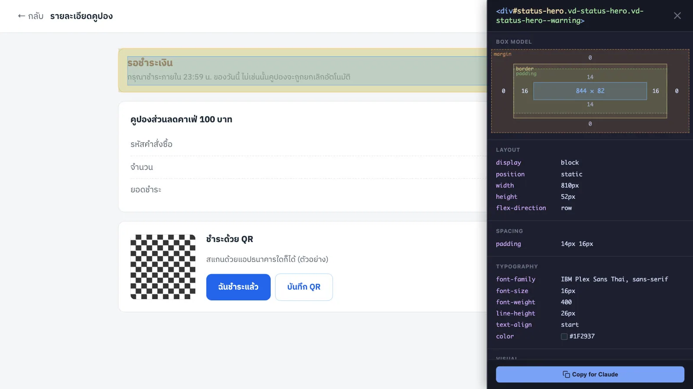
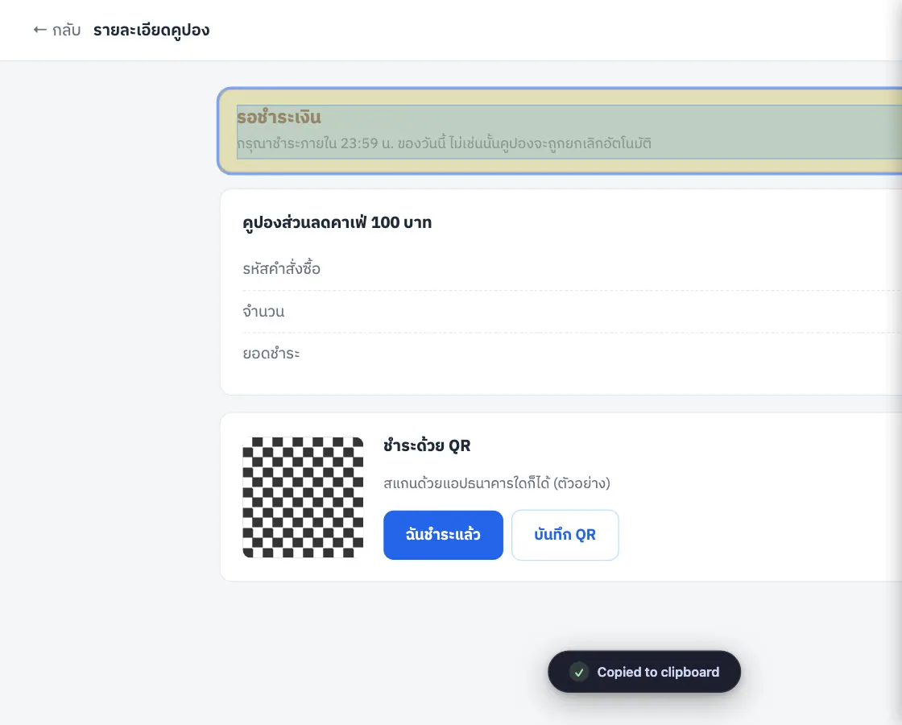
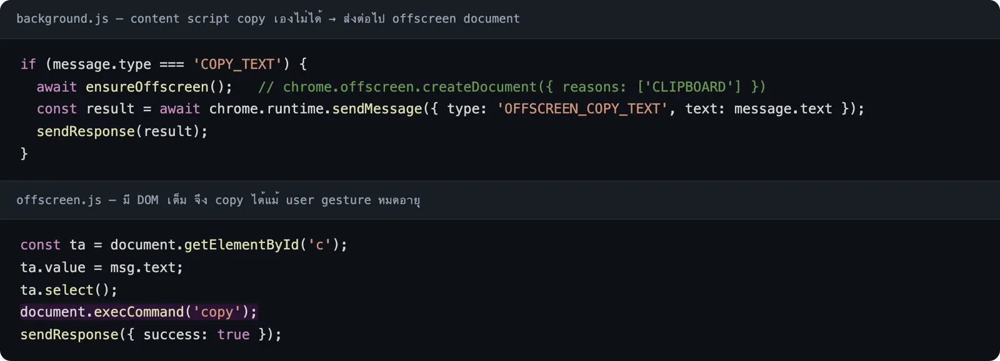
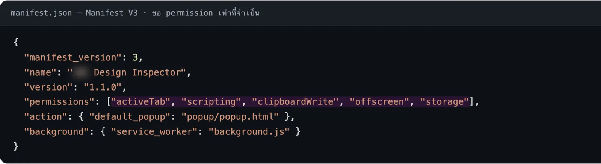
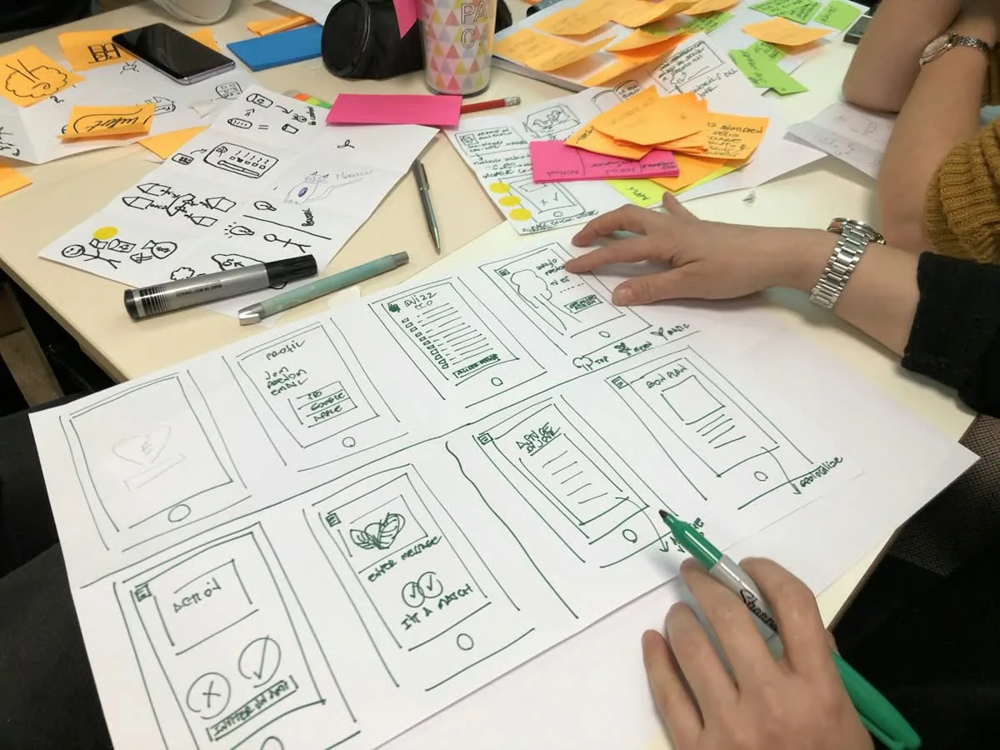

Design Inspector for Claude
Design Inspector for Claude เกิดจากการสังเกต pain point ของตัวเอง แล้วลงมือแก้ปัญหาด้วย Design Thinking — ตั้งแต่ empathize, prototype, จนถึง iterate จากการใช้งานจริง

Inspect → Copy → Paste to Claude — Chrome Extension ที่ช่วย UX Designer inspect element บนเว็บ แล้ว copy ข้อมูลเป็น Markdown สำหรับ Claude AI ได้ทันทีในคลิกเดียว
ทุกครั้งที่จะบอก Claude ว่า "แก้ element นี้" ต้องเตรียมข้อมูลเองทั้งหมด
ในฐานะ UX Designer ที่ใช้ Claude เป็น design assistant — ปัญหาที่เจอทุกวันคือ: เวลาจะบอก Claude ว่า "แก้ element นี้ให้หน่อย" ต้องเปิด DevTools → หาข้อมูล → คัดลอก CSS → จัดรูปแบบ → วางใน prompt ทุกครั้ง
กระบวนการนี้เสีย 2-3 นาทีต่อ element และเกิดขึ้นซ้ำๆ วันละหลายสิบครั้ง — รวมแล้วเสียเวลามากกว่าที่คิด

จาก pain point ของตัวเอง สู่ extension ที่ใช้ทุกวัน
ห้าขั้นของ Design Thinking ตั้งแต่สังเกต workflow ตัวเองจนถึงปรับจากการใช้งานจริง

Empathize — เข้าใจ Pain Point
สังเกต workflow ตัวเองเวลาทำงานกับ Claude · ขั้นตอนที่ช้าที่สุด = การเตรียมข้อมูล element ให้ Claude · ต้องสลับไปมาระหว่าง DevTools, code editor, Claude prompt
Define — ปัญหาที่ชัดเจน
HMW: เราจะทำอย่างไรให้ designer สามารถส่งข้อมูล element ให้ Claude ได้ภายใน 1 คลิก โดยไม่ต้องเปิด DevTools?
Ideate — สำรวจทางเลือก
Bookmarklet — ง่ายแต่ไม่มี permission ที่จำเป็น · Chrome Extension — มี API ครบ, ใช้ได้ทุกเว็บ · ศึกษา Element Inspector extension เป็น reference
Prototype — สร้างและทดสอบ
v1: Hover inspect + detail panel · v2: เพิ่ม auto-copy Markdown on click · v3: เพิ่ม ⌘+C shortcut + toast feedback
Test & Iterate — ใช้จริง → ปรับปรุง
Markdown ยาวเกิน → ย่อให้กระชับ ~200 tokens · Screenshot ทำให้ flow ช้า → ตัดออก เน้น text · Clipboard API ใน content script มีปัญหา → ใช้ offscreen document
ชี้ · คลิก · ได้ Markdown พร้อมวาง
สี่ฟีเจอร์หลักที่ทำให้ส่งข้อมูล element ให้ Claude ได้ในคลิกเดียว

- Hover Inspect ชี้ element แล้วเห็น overlay สี box model (margin/padding/content) พร้อม tooltip แสดง tag, size, font
- Detail Panel คลิกเลือก element → แสดง panel ด้านขวาพร้อม box model diagram, computed styles, HTML snippet, CSS variables
- Auto Copy Markdown คลิกหรือกด ⌘+C → copy ข้อมูล element เป็น Markdown ลง clipboard ทันที พร้อมวางใน Claude prompt ได้เลย
- Visual Feedback Flash highlight สีฟ้า + toast pill ลอยด้านล่าง บอกสถานะ copy สำเร็จหรือไม่
Output ที่ได้
คลิก element เดียว ได้ข้อมูลครบ — Claude อ่านแล้วรู้ทันทีว่า element ไหน อยู่ไฟล์ไหน style อะไร:

**File:** http://localhost/voucher-detail.html
**Path:** `div.real-content > div#status-hero > div.vd-status-hero`
**Styles:** padding: 14px 16px | font: 400 16px/26px IBM Plex Sans Thai | bg: #FEF9EB | radius: 12px
```html
<div class="vd-status-hero vd-status-hero--warning">
<div class="vd-status-hero__title">รอชำระเงิน</div>
...
</div>
```
~200 tokens ต่อ element — กระชับพอให้ Claude เข้าใจ ไม่เปลือง context window
ตัดสินใจอะไร และทำไม
ห้าการตัดสินใจหลักที่ทำให้ extension ทำงานได้บนทุกเว็บโดยไม่พัง

| Decision | Choice | Why |
|---|---|---|
| UI Isolation | Shadow DOM | ป้องกัน style ชนกับเว็บที่ inspect — ไม่ว่าเว็บจะใช้ CSS อะไรก็ไม่พัง |
| Panel Theme | Dark (#1e1e2e) | ลด visual conflict กับเว็บ + ดูเป็น dev tool ที่ designer คุ้นเคย |
| Clipboard | Offscreen Document | Content script ไม่มี clipboard permission → ส่งผ่าน background → offscreen ที่มี DOM เต็ม |
| Output Format | Compact Markdown | Claude อ่าน structured text ดีกว่ารูป — ประหยัด token, แก้ไขง่าย |
| ตัด Screenshot | Text-only | ทดลองแล้วพบว่า image clipboard ไม่ stable ข้าม browser — text เชื่อถือได้ 100% |
ห้ารอบของการปรับ จากใช้ได้ สู่ใช้ดี
แต่ละรอบมาจากการใช้งานจริง — บางรอบเพิ่ม บางรอบตัดทิ้ง

v1.0 — Hover + Panel + Manual Copy
Inspect element ได้ แต่ต้องกดปุ่ม copy เอง → ยังช้ากว่าที่ควร
v1.0 + Screenshot — ตัดออก
เพิ่ม auto-screenshot + capture highlight ของ element → พบว่า image clipboard ไม่ stable, ทำให้ flow ช้า, download ไฟล์ยุ่งยาก → ตัดออก
Clipboard Fix — Offscreen Document
navigator.clipboard ใน content script ไม่ทำงาน เพราะ user gesture หมดอายุหลัง async → แก้โดยส่ง copy ไป offscreen document ผ่าน background
Markdown ย่อ — จาก verbose เป็น compact
Markdown เดิมมี table + ASCII box model ≈400 tokens → ย่อเป็น 1-liner styles ≈200 tokens ประหยัด context 50%
v1.1 — Cleanup & Ship
ลบ dead code 224 บรรทัด (screenshot.js, styles.css), ทำ error handling ให้สม่ำเสมอ, ลดจำนวนไฟล์จาก 7 เหลือ 5
Content script → background → offscreen
แยกหน้าที่เป็นสามชั้น เพื่อให้ copy ลง clipboard ได้จริงบนทุกเว็บ

Content scripts คุยกับ background ผ่าน chrome.runtime.sendMessage แล้ว background ส่งต่อให้ offscreen document เป็นคน copy
Tech Stack
Manifest V3 ล้วน ไม่มี framework

สิ่งที่ได้เรียนรู้
สี่บทเรียนจากการทำเครื่องมือให้ตัวเองใช้

Clipboard ≠ Simple: Content script ไม่มี clipboard permission โดยตรง — ต้องเข้าใจ user gesture lifecycle และใช้ offscreen document เป็น proxy
Less > More: ฟีเจอร์ screenshot ดูดีบนกระดาษ แต่ใช้จริงแล้วช้าและไม่ stable — ตัดออกแล้วดีกว่า
Shadow DOM Isolation: ถ้าจะ inject UI เข้าหน้าเว็บ ต้องใช้ Shadow DOM ไม่งั้น CSS ของเว็บกับ extension จะชนกัน 100%
Design for AI Context: Output สำหรับ AI ต้องคิดเรื่อง token budget — ข้อมูลเยอะไม่ได้แปลว่าดี ต้อง compact + structured